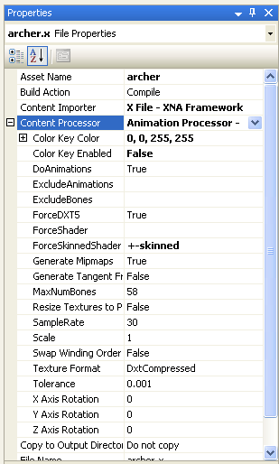
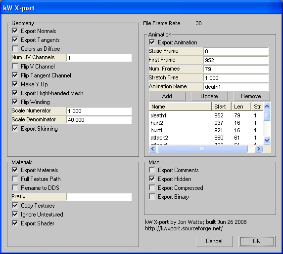
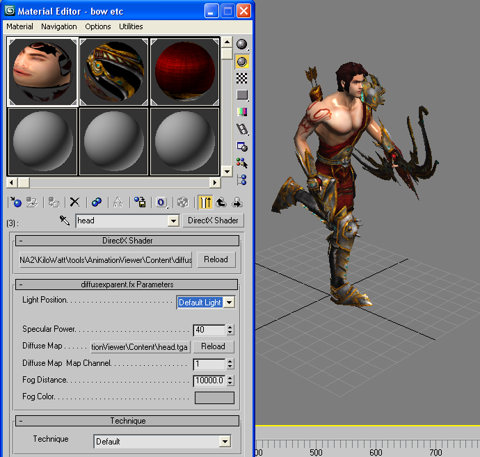

Copyright © 2008-2011 Jon Watte. All rights reserved.
The second half of this file contains a programmer's introduction to KiloWatt Animation. Please read the entire file!
Change List
The KiloWatt Animation code is released under the MIT open source license, and you can use it free of charge in any project (commercial or not) provided that the license is followed. The license is included in this directory in a file called LICENSE.txt. The artwork is NOT licensed for further distribution (except for the .fx files, which count as code), and you can NOT re-use the art in your own project. If you want to purchase copies of the art for use in your game, the models come from http://www.3dbud.com/ and have been modified and exported from 3ds Max using kW X-port.
This directory contains animation classes that will let you animate both non-skinned and skinned objects built in 3ds Max and exported with the kW X-port plug-in. The classes may also work with other animated meshes, such as Fbx files, or .X files from other sources, but this has not been thoroughly tested.
The contents of the folder is as follows:
To use KiloWatt Animation in your project, you need to do the following:
Now, you can add .X files (and, presumably, .FBX files) to your Content project, and select the "Animation Processor - KiloWatt" as the content processor for that mesh. When the mesh is built, any animation is extracted and added to the Tag dictionary of the Model. Here are the settings used for the archer.x model:
The ForceShader and ForceShaderSkinned settings, respectively, allow you to specify a specific effect file to use for the parts of the model that are not skinned, or skinned, respectively. If the name starts with a "+" sign, then the rest of the name will be added to the existing effect name, instead of the effect name entirely replaced. Thus, the archer is modeled in 3ds Max using the "diffuseonly.fx" effect, but the built file will reference the effect "diffuseonly-skinned.fx". ForceShader also allows you to specify a given shader for materials that don't originally use shaders.
SampleRate sets the rate at which to sample each imported animation. This allows you to determine what level of precision you want, although higher sampling rates will use more disk and memory space. The processor will run keyframe reduction on the animation data, removing keyframes that are the same as the interpolated value between the two neighbors. This saves considerable space! There is some loss of quality allowed in this process; how much loss you allow is specified with Tolerance. "1" is a pretty large number for loss; "0.001" is intended to be imperceptible loss. "0" will not accept any quality loss in keyframe reduction, and will result in somewhat larger animation files (but still a lot smaller than the matrix based animation libraries.)
After you have loaded the model with Content.Load
To use an Animation, you create an AnimationInstance. The AnimationInstance actually has a concept of "current time," as well as a concept of "speed" that lets you scale the animation to play faster or slower than normal. This is useful, for example, for walking and running animations. The simplest usage of AnimationInstance is to create one with a given Animation as argument, then call Advance(gameTime.ElapsedGameTime.TotalSeconds) each Update() call, and call CopyPoseTo() to copy the (parent-relative) bone poses into the Model inside Draw().
Then draw the model as animated, first calling Model.CopyAbsoluteBoneTransformsTo to extract the world-relative matrices, and then looping through each ModelMesh, setting the World matrix, and drawing the mesh (this is the same as for the animation sample, and pretty much any other Model drawing sample that doesn't use the simple Model.Draw() function).
A simple way of doing this is to use the ModelDraw class in KiloWatt.Base.Graphics. You can create one of these per model you want to draw, and then call Draw() on it to draw. This will also remember transparent parts of the mesh (based on annotations on the shader) and draw those sorted, last, when you call ModelDraw.DrawDeferred().
The ModelDraw class uses the EffectConfig class, also from KiloWatt.Base.Graphics. This class collaborates with the DrawDetails description class to set up shaders that are configured in a common way, implemented by the sample shaders included in the distribution. Sample shaders include:
| shader | description |
|---|---|
| diffuseonly.fx | Render a model with a diffuse texture, using per- pixel phong shading. You can configure a fog distance and a single directional light. |
| diffuseonly-skinned.fx | Same as diffuseonly.fx, but additionally calculate mesh skinning in the vertex shader based on a bone pose. |
| diffusexparent.fx | Render a model with a diffuse texture, using per- pixel phong shading. You can configure a fog distance and a single directional light. This shader uses the alpha of the diffuse texture for blending, and marks the technique as transparent-sorted for EffectConfig to use. |
| diffusexparent-skinned.fx | Same as diffusexparent.fx with skinning added. |
| model.fx | Render a model with diffuse color mapping, tangent-space normal mapping (requires tangents to be exported from 3ds Max or similar), and gloss mapping (RGB for reflectivity, A for glossiness). Lets you specify fog distance and a single directional light. |
See the AnimationViewer sample for more usage examples.
A more advanced way of using the library involves using the AnimationBlender class, which will blend some number of animations at the same time, and keep them all progressing in time. You can smoothly blend over time from one animation to the next using TransitionAnimations(), or you can manually add some number of animations and change their weights over time. There are two kinds of animation blending: NormalizedBlend and Compose. First, all animations with NormalizedBlend mode are blended together, to a normalized "1.0" weight. Then, each Compose animation is added into the animation, with the weight given by its IBlendedAnimation instance.
The AnimationProcessor has some number of properties you may want to set. Chief among them is the ForceDXT5 property, which will force all textures to DXT5 format. There is also the DoAnimations property, which when false, causes no animations to be processed (convenient for debugging). The ExcludeAnimations and ExcludeBones properties work more or less the same way; they are semicolon separated lists of regular expressions that will match the names of of animations or bones to exclude from the animation set, respectively. There should be no spaces between the semicolons and the data. Note that these regular expressions are implicitly anchored to the beginning/end of the name, so if you want to match a substring, you have to use ".*" at beginning and end.
For example, if your file contains the three animations called "Run," "Jump" and "Idle," and you wanted to include only the "Idle" animation, you would set the "ExcludeAnimations" property to "Run;Jump" (or, for that matter, "Jump;Run"). Without the double quotes, of course :-)
The animation processor will currently generate two "special" animations, called "$id$" and "$bind$." The $id$ animation sets all the animated matrices to the identity matrix, which ends up putting all bones unrotated at the origin. The "$bind$" animation sets all bones to their initial bind pose, so the model will end up posed the way it was in the DCC tool.
The included art is NOT licensed under the MIT license. Especially the archer.x file is covered by a license that does not allow re-use outside of this current download. Please respect intellectual property rights of the artists who made the mesh and textures included. Also note that the original textures came in larger resolutions, but I have scaled them down to lower quality to avoid too large a download.
A screen shot of the settings used for kW X-port in 3ds Max when exporting the archer mesh is included here:
The shader materials were set up in 3ds Max using the DirectX Material, which is only available when you're using the Direct3D viewport manager. Also note that the fog settings need to be turned up a lot from the default setting, to avoid getting an all gray mesh.
For help with the KiloWatt Animation Library and possible future releases, you can sign up for the forums at http://www.enchantedage.com/node/24.
For help with the kW X-port art files, please join up the SourceForge KiloWatt forum at http://www.kwxport.org/.